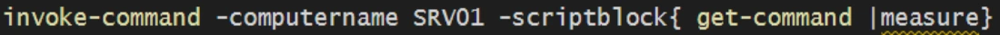
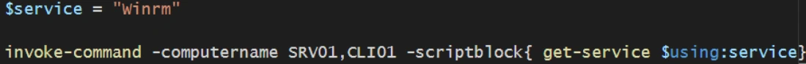
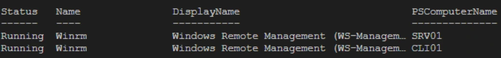
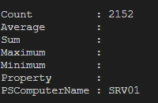

Transcription du support du Drive. Les formulations historiques et les exemples du document sont conservés. Les valeurs d’accès du laboratoire sont indiquées comme « fourni par le formateur ». Les adresses de messagerie personnelles utilisent example.com.
Démonstration 09 du module 5
L’objectif de cette démonstration est de découvrir l’utilisation de la commande Invoke- Command.
Une fois le principe de Remoting acquis, il est possible avec PowerShell de demander l’exécution de commandes sur des machines distantes, sans ouvrir de session préalable. Cela permet un gain de temps lorsque l’on souhaite effectuer des modifications identiques à un groupe de machines.
On recherche le nombre de commandes disponibles sur la machine « SRV01 »
Il est possible de passer des variables locales dans la commande afin de transmettre des valeurs à une machine distante.



